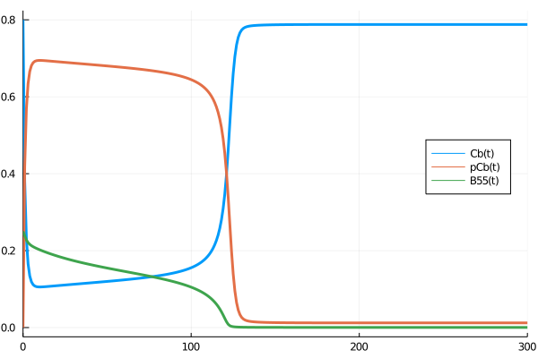

Example
G2/M cell cycle transition
The SbmlInterface GitHub repository contains a version of the Vinod et Novak model of the G2/M cell cycle transition. The model contains 13 species and 24 parameters.
As mentioned in the section Tutorial, you can simulate the SBML model with the simulatesbml function:
using SbmlInterface
sol = simulatesbml("examples/Vinod_FEBS2015/model_Vinod_FEBS2015.xml",(0.0,300.0))
using Plots
plot(sol,vars=[Cb,pCb,B55],lw=3,",size=(600,400),legend=:right)